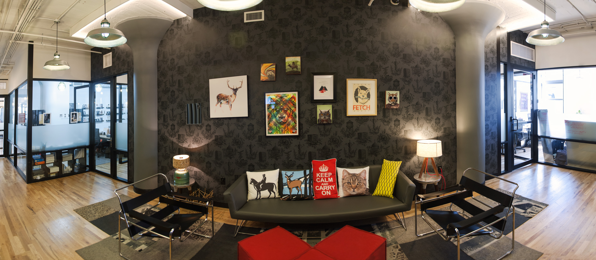

CANVAS STUFF WILL GO HERE!!
A little bit about us
Mattock is a boutique post production house, specializing in high end short form.
Dylan Matthews, Baltimore native, was born an editing machine. He eats, lives and breathes post production. Other than being a Ravens fan, he's a solid dude.
Joel Douris shouldn't be allowed near a computer. He's simply too good. I'm not sure how Mattock managed to hire him.